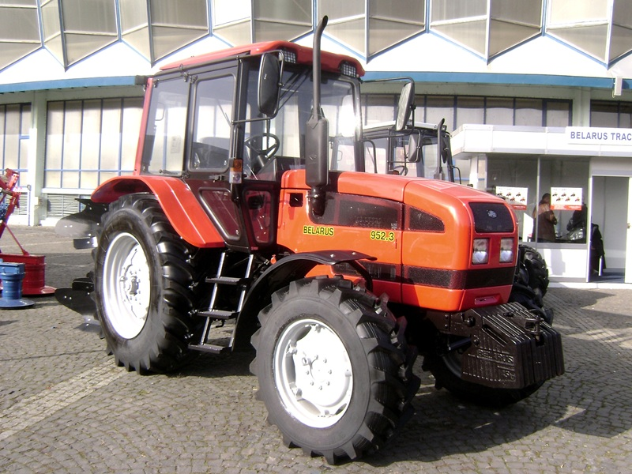

МТЗ Беларус 952.3

МТЗ Беларус 952.3 – це універсально-просапний трактор, який є потужнішою та екологічнішою версією класичної 900-ї серії. Машина оснащена 4-циліндровим двигуном Д-245.5S2 з турбонаддувом, який відповідає європейським стандартам Stage II. Завдяки системі проміжного охолодження повітря (інтеркулеру), двигун демонструє стабільну роботу та підвищений крутний момент, що дозволяє трактору ефективно працювати з комбінованими сільгоспагрегатами.
Модель 952.3 відрізняється посиленою трансмісією та наявністю синхронізованої коробки передач, що забезпечує комфортне керування під час транспортних робіт. Трактор зазвичай комплектується балочним переднім мостом, який має вищу тримкість порівняно з портальним, що робить його ідеальним для встановлення важкого навісного обладнання або фронтального навантажувача.
| Параметр | Значення |
|---|---|
| Клас тяги | 1.4 |
| Тип ходової частини | колісний |
| Колісна формула | 4х4 (повний привід) |
| Тип рами | напіврамна конструкція |
| Основне призначення | важкі сільськогосподарські роботи, передпосівний обробіток, посів та транспортні операції |
| Параметр | Значення |
|---|---|
| Модель | Д-245.5S2 |
| Тип двигуна | 4-циліндровий, дизельний, з турбонаддувом |
| Спосіб охолодження | рідинна закрита з принудильною циркуляцією |
| Розташування циліндрів | рядне, вертикальне |
| Робочий об’єм | 4,75 л |
| Номінальна потужність | 70 кВт (95 к.с.) |
| Номінальні оберти | 1800 об/хв |
| Максимальний крутний момент | 451 Н·м (при 1400 об/хв) |
| Питома витрата палива | ~229 г/кВт·год |
| Параметр | Значення |
|---|---|
| Муфта зчеплення | суха, однодискова, постійно замкнута |
| Тип КПП | механічна, синхронізована (ступінчаста) |
| Кількість передач | 14 вперед / 4 назад (схема (7+2)х2) |
| Тип реверсу | механічний (через редуктор) |
| Діапазон швидкостей (вперед) | 2,1 – 32,6 км/год |
| Вал відбору потужності | незалежний двошвидкісний (540 / 1000 об/хв) |
| Діапазон | Передача | Теоретична швидкість, км/год | Передаточне число (загальне) | Тягове зусилля, кН |
|---|---|---|---|---|
| Знижені передачі | 1 | 2,10 | 198,5 | 18,20* |
| Знижені передачі | 2 | 3,15 | 132,3 | 18,20* |
| Знижені передачі | 3 | 4,40 | 94,7 | 18,20* |
| Знижені передачі | 4 | 6,10 | 68,3 | 17,40 |
| Знижені передачі | 5 | 8,20 | 50,8 | 13,00 |
| Знижені передачі | 6 | 10,20 | 40,8 | 10,40 |
| Знижені передачі | 7 | 12,10 | 34,4 | 8,70 |
| Підвищені передачі | 1 | 8,90 | 46,8 | 11,90 |
| Підвищені передачі | 2 | 11,40 | 36,5 | 9,30 |
| Підвищені передачі | 3 | 13,30 | 31,3 | 7,95 |
| Підвищені передачі | 4 | 15,10 | 27,6 | 7,00 |
| Підвищені передачі | 5 | 18,50 | 22,5 | 5,70 |
| Підвищені передачі | 6 | 24,90 | 16,7 | 4,20 |
| Підвищені передачі | 7 | 32,60 | 12,8 | 3,25 |
| Параметр | Значення |
|---|---|
| Тип коліс | пневматичні шини низького тиску |
| Колісна формула | 4х4 (повний привід) |
| Передній міст (ПВМ) | ведучий, балкового типу (з посиленими редукторами) |
| Типорозмір передніх шин | 360/70 R24 |
| Типорозмір задніх шин | 18.4 R34 (або 15.5 R38 залежно від комплектації) |
| Радіус ведучого колеса (заднього) | ~0,84 м |
| Кліренс (дорожній просвіт) | 500 мм |
| Агротехнічний просвіт | ~600 мм |
| Блокування диференціалу | гідравлічне (з електрогідравлічним управлінням) |
| Рульове управління | гідрооб'ємне (ГОРУ) з незалежним контуром |
| Гальмівна система | дискова, суха (основна та стоянкова) |
| Параметр | Значення |
|---|---|
| Під час роботи з навантаженням | 15,5 – 18,0 кг/год |
| Під час холостих переїздів | 6,5 – 8,0 кг/год |
| Під час зупинок (холостий хід) | 1,1 – 1,3 кг/год |
| Параметр | Значення |
|---|---|
| Експлуатаційна маса | 4800 кг |
| Довжина / Ширина / Висота | 4450 / 2000 / 2900 мм |
| Об’єм паливного баку | 130 л |
| Параметр | Значення |
|---|---|
| Гідравлічна система | роздільно-агрегатна, 45 л/мин |
| Вантажопідйомність навіски | 4000 кг (посилена за рахунок двох гідроциліндрів) |
| Кабіна | комфортабельна, з покращеною оглядовістю та фільтрацією повітря |